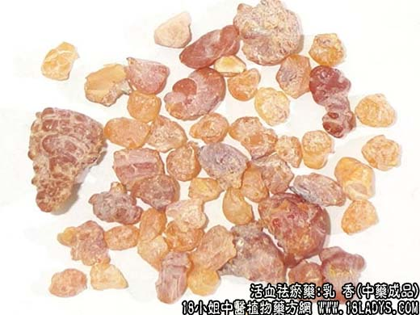

原文出处:本文转载自中药大全网。
原文连接:https://www.daquan.com/post/1995.html
原文连接:https://www.daquan.com/post/1995.html
_乳香的功效与作用0.png)

【中药概述】
乳香，别名：马思答吉、乳头香、塌香、天泽香、摩勒香、杜噜香、多伽罗香、浴香，为橄榄科小乔木植物乳香树的胶树脂。辛、苦，温。归心、肝、脾经。
1．活血消肿：用于血瘀气滞的脘腹疼痛、痛经、经闭，及跌打损伤等，如（七厘散、醒消丸、小活络丹）。
2．定痛生肌：用于疮疡溃破后久不收口，如（<医学心悟>海浮散）。
【药物形态】
本品呈长卵形滴乳状、类圆形颗粒或粘合成大小不等的不规则块状物。大者长达2cm（乳香珠）或5cm（原乳香）。表面黄白色，半透明，被有黄白色粉末，久存则颜色加深。质脆，遇热软化。破碎面有玻璃样或蜡样光泽。具特异香气，味微苦。
【药效鉴别】本品活血利气而善于止痛，能“定诸经之痛”。外用又能生肌敛疮，为伤科和外科的要药，又为内妇科气滞血瘀证之常用药。
【临证应用】乳香10g、胡椒5g，水煎服，治胃痛、心气疼痛。
【药理作用】具有镇痛、消炎等作用。
【化学成分】含挥发油、树脂、树胶、乳香酸等。
【用量用法】3——10g，水煎服。外用适量。
【使用注意】胃弱者多服易致呕吐。
【附】 醋乳香：以活血止痛，收敛生肌力强，并有易碎、矫味之效。
本文解释权归收纳中草药图谱的中药大全所有，本文地址：https://www.daquan.com/post/1995.html